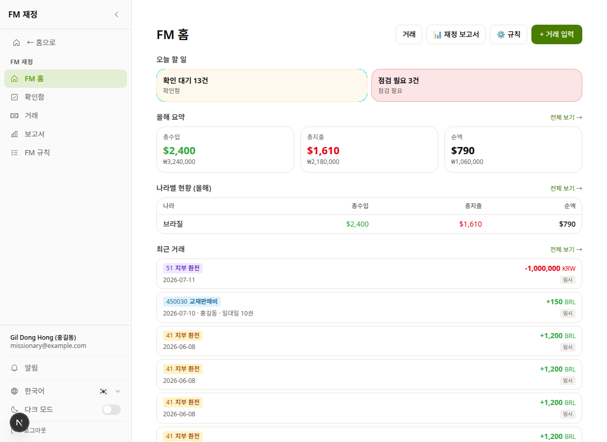
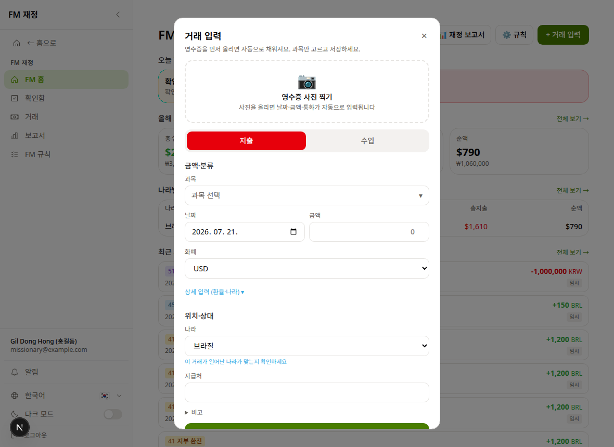
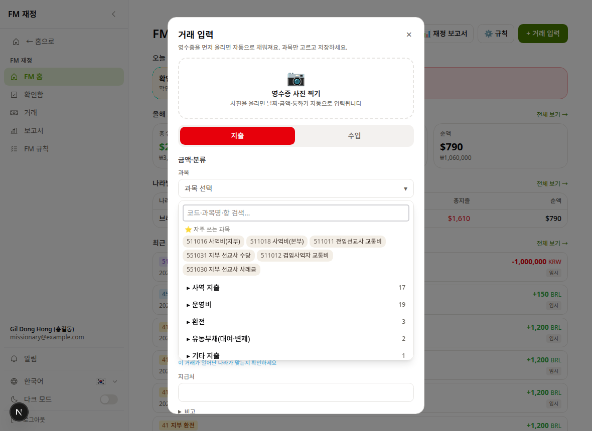
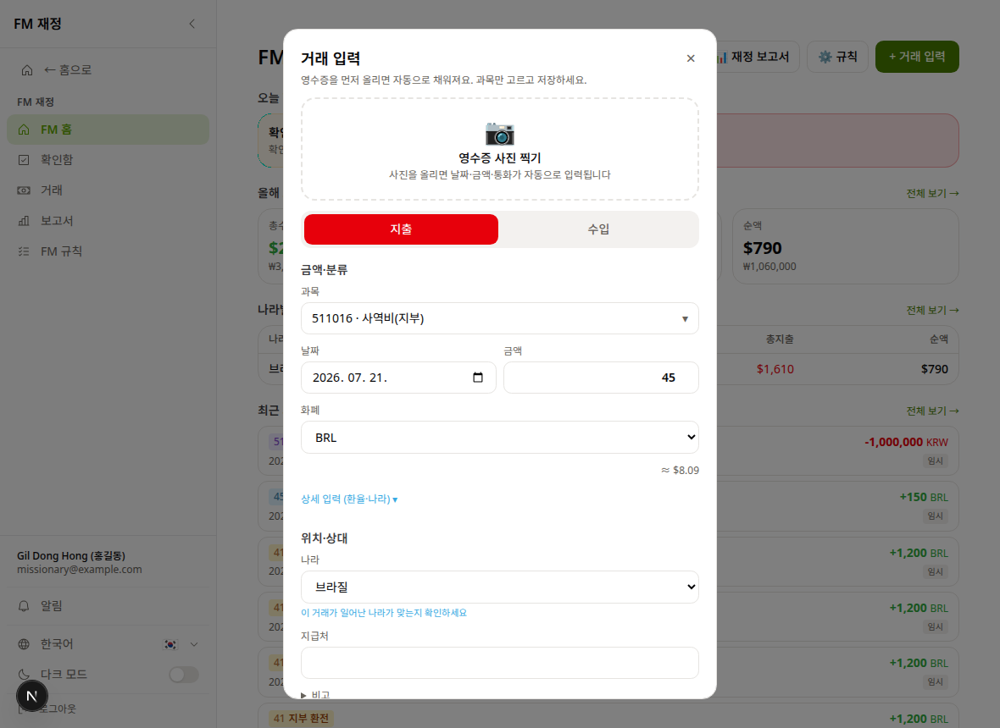
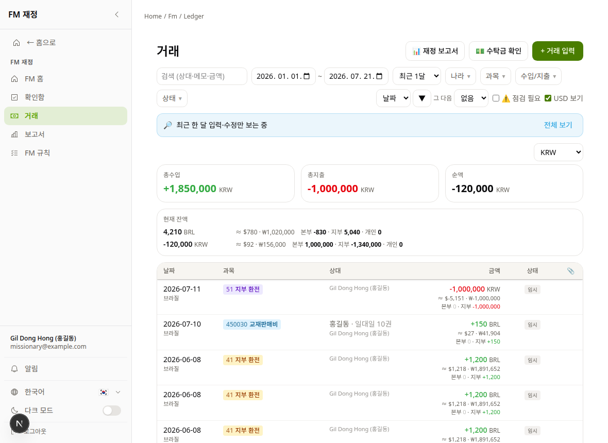
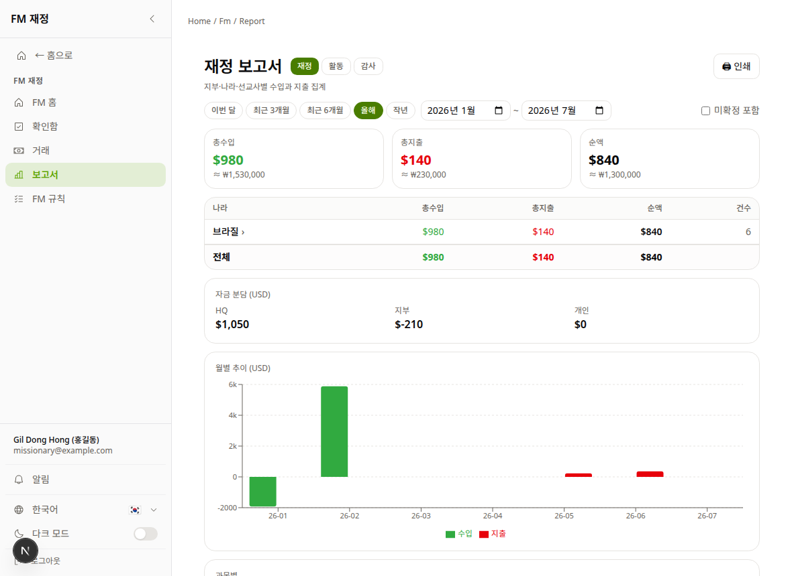

💰 재정 장부 사용 가이드Finance Ledger User GuideHướng dẫn sử dụng Sổ tài chính
BEE Korea 선교사 재정 기록이 Airtable에서 ministry.beekorea.org로 옮겨졌습니다. 이제 모든 수입·지출은 여기에 기록합니다. 예전 기록(2026년 포함)은 이미 전부 옮겨져 있습니다 — 끊긴 곳에서 이어서 쓰시면 됩니다.BEE Korea missionary bookkeeping has moved from Airtable to ministry.beekorea.org. Record all income and expenses here from now on. All past records (incl. 2026) are already migrated — just continue where you left off.Sổ sách tài chính của BEE Korea đã chuyển từ Airtable sang ministry.beekorea.org. Từ nay hãy ghi mọi khoản thu chi tại đây. Toàn bộ dữ liệu cũ (kể cả 2026) đã được chuyển sẵn.
🎓 이 가이드를 가르치는 법HOW TO TEACH THISCÁCH HƯỚNG DẪN파란 상자는 가르치는 분(태남·지부장·코디)만 보는 멘트입니다. 온보딩은 15분이면 충분합니다: ①로그인 확인(2분) ②첫 거래를 같이 입력(5분) ③"임시→확인" 개념(3분) ④잔액·보고서 보여주기(3분) ⑤질문(2분). 핵심 원칙: 설명하지 말고 본인 폰/컴퓨터로 직접 하게 하세요. 첫 입력을 성공하면 나머지는 스스로 합니다.Blue boxes are for the person teaching. Onboarding takes 15 minutes: ① confirm login (2m) ② enter the first transaction together (5m) ③ the "draft → confirm" concept (3m) ④ show balance & reports (3m) ⑤ questions (2m). Key principle: don't explain — have them do it on their own device.Ô màu xanh dành cho người hướng dẫn. Chỉ cần 15 phút: ① đăng nhập (2p) ② nhập giao dịch đầu tiên cùng nhau (5p) ③ khái niệm "tạm → xác nhận" (3p) ④ xem số dư & báo cáo (3p) ⑤ hỏi đáp (2p). Nguyên tắc: để họ tự làm trên thiết bị của mình.
📱 폰에서도 똑같이 됩니다. 자주 쓰시면 브라우저에서 "홈 화면에 추가"를 해두세요.📱 Works the same on your phone. Use "Add to Home Screen" for quick access.📱 Dùng được trên điện thoại. Hãy "Thêm vào màn hình chính" để mở nhanh.
🎓 멘트SCRIPTLỜI DẪN"구글 로그인이 안 되면 십중팔구 다른 구글 계정으로 들어간 겁니다. 어떤 이메일로 로그인했는지 화면 왼쪽 아래에서 확인하게 하세요. 등록된 이메일이 뭔지 모르면 본부(태남)에게 물어보면 즉시 알려줍니다. 이메일 변경도 본부에서 1분이면 됩니다.""If Google login fails, they almost certainly used a different Google account. Check the email shown at the bottom-left. HQ can tell them (or change) their registered email in a minute.""Nếu không đăng nhập được, thường là do dùng tài khoản Google khác. Kiểm tra email ở góc trái dưới màn hình. Văn phòng có thể đổi email đăng ký trong 1 phút."
2FM 홈 읽는 법Reading the FM homeMàn hình chính FM

※ 화면의 이름·금액은 전부 예시입니다※ Names & amounts in screenshots are examples※ Tên & số tiền trong ảnh chỉ là ví dụ
오늘 할 일 — 확인 대기(내가 확인 도장 찍을 것), 점검 필요(뭔가 이상한 것). 이게 0이면 밀린 일이 없는 겁니다.
올해 요약 / 나라별 현황 — 내 장부의 수입·지출·순액. USD 환산과 원화가 함께 보입니다.
최근 거래 — 방금 입력한 것이 여기 바로 나타납니다. 노란 임시 딱지가 붙어 있으면 아직 확정 전입니다(5단계).
Today's tasks — drafts waiting for your confirmation, and items that need review.
This year / By country — income, expense and net of your ledger, with USD & KRW equivalents.
Recent — what you just entered appears here with a yellow draft tag until confirmed (step 5).
Việc hôm nay — giao dịch chờ xác nhận và mục cần kiểm tra.
Tổng kết năm / Theo quốc gia — thu, chi và số dư của sổ bạn.
Giao dịch gần đây — mục vừa nhập hiện ở đây với nhãn vàng tạm cho đến khi xác nhận (bước 5).
🌏 왼쪽 아래에서 언어를 바꿀 수 있습니다 (한국어·English·Tiếng Việt 등 10개).🌏 You can switch the app language at the bottom-left (10 languages).🌏 Đổi ngôn ngữ ứng dụng ở góc trái dưới (10 ngôn ngữ, có Tiếng Việt).
3거래 입력 — 영수증 먼저Enter a transaction — receipt firstNhập giao dịch — hóa đơn trước
오른쪽 위 + 거래 입력을 누르면 아래 창이 뜹니다. 순서는 딱 하나만 기억하세요: 영수증 사진부터.
Tap + New entry (top-right). Remember one thing: photo of the receipt first.
Nhấn + Nhập giao dịch (góc phải trên). Chỉ cần nhớ: chụp hóa đơn trước.

📷 영수증 사진 찍기를 눌러 영수증을 찍으면 → AI가 날짜·금액·통화·상대를 자동으로 채웁니다.
지출/수입을 확인하고, 과목만 고르면 끝. (다음 단계)
영수증이 없는 거래(계좌이체 등)는 그냥 금액·날짜를 직접 쓰면 됩니다.
📷 Tap photo receipt — AI fills in date, amount, currency, payee automatically.
Check expense/income, pick the category — done (next step).
No receipt (e.g. bank transfer)? Just type amount & date manually.
📷 Nhấn chụp hóa đơn — AI tự điền ngày, số tiền, loại tiền, người nhận.
Kiểm tra chi/thu, chọn hạng mục — xong (bước tiếp theo).
Không có hóa đơn? Nhập số tiền & ngày thủ công.
🎓 멘트SCRIPTLỜI DẪN"여기서 실제 영수증 하나를 꺼내게 하세요. 지갑에 있는 아무 영수증이나 좋습니다. 본인 폰으로 찍고 자동으로 채워지는 걸 보면 '어, Airtable보다 쉽네'가 됩니다. 이 순간이 온보딩의 전부입니다. AI가 채운 값이 틀릴 수 있다는 것도 이때 같이 — '기계가 채워도 저장 전에 눈으로 확인'이라고 말해 주세요.""Have them pull out a real receipt — any one from their wallet. Watching the fields auto-fill on their own phone is the whole onboarding. Also mention: AI can be wrong, so always glance over the values before saving.""Hãy để họ lấy một hóa đơn thật và tự chụp bằng điện thoại của họ. Nhắc: AI có thể sai, luôn kiểm tra lại trước khi lưu."
4과목 고르기와 나라 확인Category & countryChọn hạng mục & quốc gia

과목을 누르면 ⭐ 자주 쓰는 과목이 맨 위에 나옵니다. 대부분 여기서 끝나고, 없으면 ▸ 분류를 펼쳐 찾으세요. Airtable에서 쓰던 과목 번호가 그대로라 익숙할 겁니다 (511016 사역비 등).
Tap category — ⭐ frequently-used ones are on top. The same account codes as Airtable (e.g. 511016 ministry expense).
Nhấn hạng mục — mục hay dùng ở trên cùng. Mã số giống hệt Airtable (vd. 511016 chi phí mục vụ).

⚠️ 저장 전에 나라를 꼭 확인하세요. 거주국이 자동으로 들어가는데, 다른 나라 사역 중이면 그 나라로 바꿔야 합니다 (예: 한국 거주인데 베트남 세미나 지출 → 베트남). 나라가 정확해야 나라별 보고서가 맞습니다.⚠️ Before saving, check the country. It defaults to where you live — change it if the expense happened during ministry in another country. Accurate countries make accurate reports.⚠️ Trước khi lưu, kiểm tra quốc gia. Mặc định là nơi bạn ở — đổi nếu chi tiêu xảy ra khi đi mục vụ ở nước khác.
🎓 멘트SCRIPTLỜI DẪN"과목을 못 정하겠으면 대충 제일 비슷한 걸 고르고 비고에 메모하라고 하세요 — 확인(다음 단계) 전에는 언제든 고칠 수 있으니 입력을 멈추는 것보다 낫습니다. 환율은 신경 쓸 필요 없다는 것도 짚어 주세요: 매월 본부가 공식 환율을 넣어두고 자동 적용됩니다.""If unsure of the category: pick the closest one and leave a note — it's editable until confirmed. And they never need to think about exchange rates: HQ sets the official monthly rate, applied automatically.""Nếu không chắc hạng mục: chọn cái gần nhất và ghi chú — có thể sửa trước khi xác nhận. Tỷ giá do văn phòng cài hàng tháng, tự động áp dụng."
5임시 → 확인 (제일 중요!)Draft → Confirm (most important!)Tạm → Xác nhận (quan trọng nhất!)

저장한 거래는 먼저 노란 임시 상태가 됩니다. 종이 장부의 "연필로 쓴 것"과 같아서 아직 고칠 수 있습니다.확인 도장은 입력한 사람이 아닌 다른 관리자가 찍습니다(네 눈 원칙) — 내가 입력한 것은 본부·지부장이 확인하고, 다른 사람이 내 장부에 입력해 준 것은 내 확인함에 와서 내가 확인합니다. 확인되면 "볼펜"이 되어 수정할 수 없습니다 (잘못됐으면 취소 후 재입력).
Saved entries start as yellow draft — like pencil in a paper ledger, still editable. Confirmation is done by someone other than the person who entered it (four-eyes principle): your own entries are confirmed by HQ or your branch director, while entries someone else typed into your ledger arrive in your Inbox for you to confirm. Once confirmed it's in ink (cancel & re-enter if wrong).
Giao dịch đã lưu có nhãn vàng tạm — như viết bút chì, còn sửa được. Người xác nhận phải khác người nhập: mục bạn tự nhập sẽ do văn phòng/giám đốc chi nhánh xác nhận; mục người khác nhập vào sổ của bạn sẽ đến Hộp xác nhận của bạn.
📌 홈 화면 읽는 법: "확인함 N건" = 내가 도장 찍을 것(남이 입력) / "임시 N건" = 내가 입력했고 다른 관리자의 확인을 기다리는 것 — 임시는 기다리면 됩니다. 내 할 일은 영수증을 잘 붙여 확인이 빨리 나게 하는 것.📌 Reading the home: "Inbox N" = entries for you to confirm (typed by others) / "N drafts" = your own entries waiting for another manager. Drafts just wait — your job is attaching clear receipts so they confirm fast.📌 Trên màn hình chính: "Hộp xác nhận N" = mục bạn cần xác nhận / "N bản nháp" = mục của bạn đang chờ quản lý khác.
🎓 멘트SCRIPTLỜI DẪN"연필/볼펜 + '도장은 남이 찍는다'까지 한 세트로 가르치세요. 왜냐고 물으면: 돈 기록은 두 사람의 눈을 거쳐야 감사가 성립합니다(입력자≠확인자). 흔한 오해 = '내 임시가 쌓였는데 내 확인함이 비어 있어요' — 정상입니다, 그건 본부 확인함에 가 있는 겁니다. 지부장·본부를 가르칠 땐 반대로 '확인함을 매주 비우는 것'이 그들의 핵심 습관입니다.""Teach pencil/ink together with 'someone else stamps it'. If asked why: money records need two pairs of eyes (enterer ≠ confirmer). Common confusion: 'my drafts pile up but my Inbox is empty' — normal; they're in HQ's inbox. For directors/HQ, the key habit is emptying their Inbox weekly.""Dạy kèm: 'người khác đóng dấu'. Sổ tiền cần hai đôi mắt (người nhập ≠ người xác nhận)."
6환전 기록Recording currency exchangeGhi đổi tiền
달러를 현지 화폐로 바꿨을 때는 거래 두 건(나간 돈·들어온 돈)을 따로 쓰지 말고, 과목에서 ▸ 환전 분류를 고르세요. "준 돈 → 받은 돈"만 넣으면 두 거래가 짝으로 기록되고 환율이 자동 계산됩니다.
When exchanging money, don't write two separate entries — pick the ▸ Exchange category. Enter "gave → received" and both sides are recorded as a pair with the rate auto-calculated.
Khi đổi tiền, đừng ghi hai mục riêng — chọn hạng mục ▸ Đổi tiền. Nhập "tiền đưa → tiền nhận", hệ thống tự ghi cặp và tính tỷ giá.
🎓 멘트SCRIPTLỜI DẪN"환전을 수입/지출 두 건으로 따로 넣으면 짝이 안 맞아 점검 대상이 됩니다. 실제로 같은 환전 수입이 4번 중복 입력된 사례가 있었어요 — '환전은 환전 과목으로 한 번에'만 기억시키세요.""Entering an exchange as two separate entries breaks the pairing. We've seen the same exchange income entered 4 times — teach 'exchange = the exchange category, once.'""Nhập đổi tiền thành hai mục riêng sẽ lệch cặp. Hãy dạy: 'đổi tiền = hạng mục đổi tiền, một lần.'"
7잔액·보고서 보기Balance & reportsSố dư & báo cáo

거래 화면 위에 통화별 현재 잔액이 항상 보입니다 — Airtable의 Remaining Total과 같은 숫자입니다.
보고서에서 기간을 고르면 나라별·과목별 집계가 나오고, 🖨 인쇄를 누르면 그대로 제출용이 됩니다. 월말 보고서를 따로 만들 필요가 없어졌습니다.
The Ledger screen always shows your current balance per currency — same number as Airtable's Remaining Total.
Reports: pick a period, get totals by country & category; 🖨 print and it's submission-ready. No more separate monthly report.
Màn hình Giao dịch luôn hiện số dư hiện tại theo từng loại tiền.
Báo cáo: chọn kỳ, xem tổng theo quốc gia & hạng mục; 🖨 in là nộp được. Không cần làm báo cáo tháng riêng.
❓ 자주 묻는 질문❓ FAQ❓ Hỏi đáp
질문
답
Q
A
Hỏi
Đáp
예전 기록은 어디 있나요?
전부 옮겨져 있습니다. 거래에서 "전체 기간"을 누르면 2026년 처음부터 다 보입니다.
Where are my old records?
All migrated. In Ledger, choose "All time".
Dữ liệu cũ ở đâu?
Đã chuyển hết. Trong Giao dịch, chọn "Toàn bộ".
Airtable에도 계속 쓰나요?
아니요. 이제 여기에만 씁니다. Airtable은 곧 읽기 전용으로 잠깁니다.
Do I still use Airtable?
No. Only here from now on. Airtable will become read-only.
Còn dùng Airtable không?
Không. Chỉ ghi tại đây. Airtable sẽ khóa chỉ-đọc.
잘못 입력했어요.
임시 상태면 열어서 그냥 고치세요. 이미 확인했다면 취소(역분개) 후 새로 입력합니다.
I made a mistake.
If it's a draft, open and edit. If confirmed, cancel (reversal) and re-enter.
Nhập sai rồi.
Nếu còn tạm, mở và sửa. Nếu đã xác nhận, hủy rồi nhập lại.
환율은 누가 정하나요?
본부가 매월 1일 공식 환율을 넣습니다. 입력할 때 자동 적용되니 신경 쓰지 않아도 됩니다.
Who sets exchange rates?
HQ sets the official rate monthly; applied automatically.
Ai đặt tỷ giá?
Văn phòng cập nhật mỗi tháng; tự động áp dụng.
다른 사람이 제 장부에 입력해줄 수 있나요?
네. 협력 입력자가 입력하면 임시로 저장되고, 장부 주인이 확인함에서 승인합니다.
Can someone else enter for me?
Yes — a delegate's entries are saved as drafts; the owner approves them in the Inbox.
Người khác nhập giúp được không?
Được — mục của người nhập hộ ở trạng thái tạm; chủ sổ duyệt trong Hộp xác nhận.
막혔어요! 누구한테 물어보죠?
본부 권태남 선교사에게 (텔레그램/카톡). 화면 캡처와 함께 보내주시면 빠릅니다.
I'm stuck!
Contact HQ (Tae-Nam Kwon) via Telegram/KakaoTalk — a screenshot helps.
Bị kẹt!
Liên hệ văn phòng (Kwon Tae-Nam) qua Telegram — kèm ảnh màn hình.